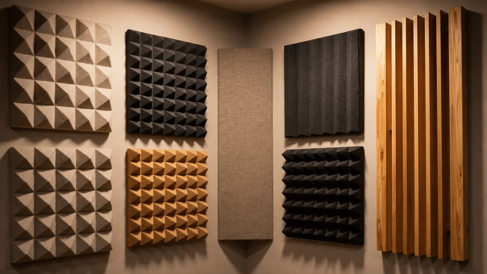
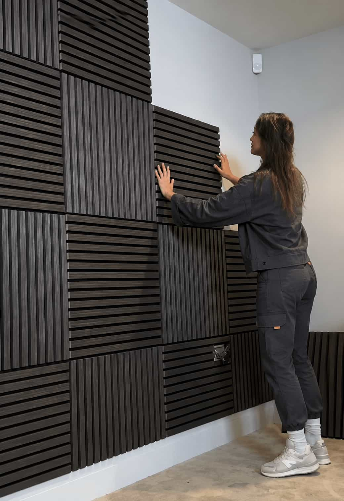
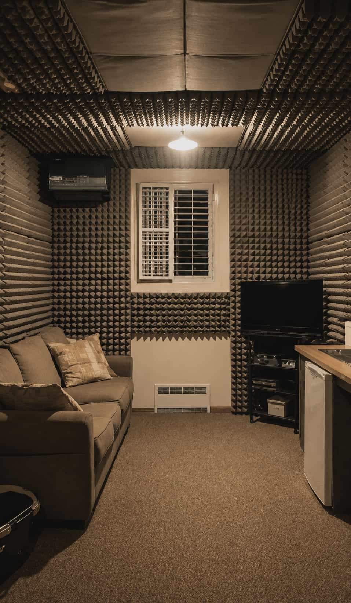
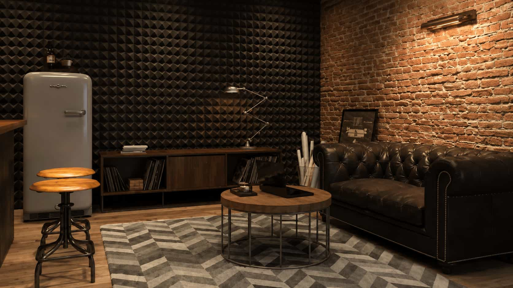
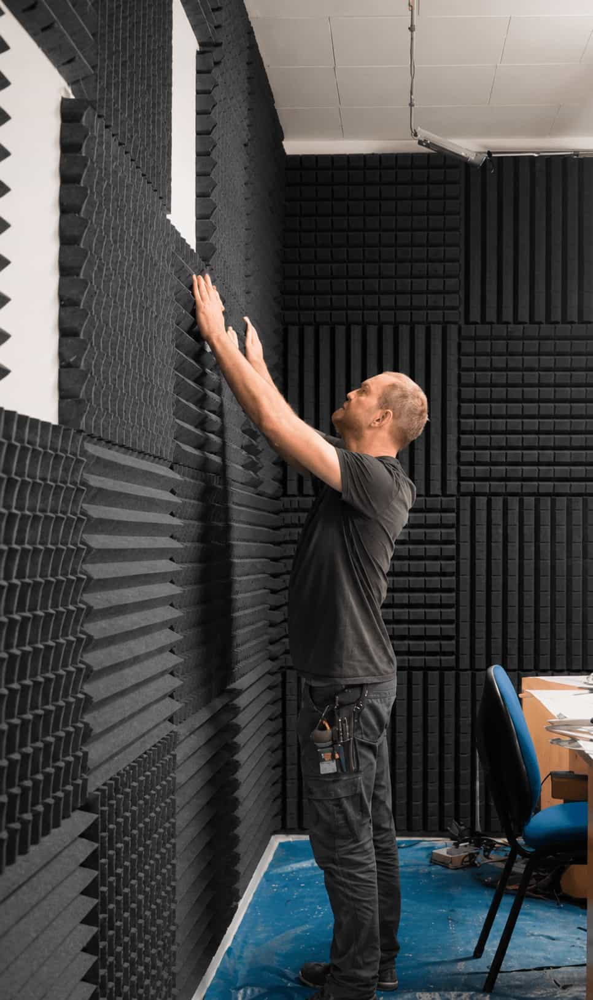

Geometry
Room proportions, symmetry, boundaries, and source-to-listener distances influence the starting layout.
Shape a clearer studio around speaker placement, listening position, reflections, desk interaction, rear-wall energy, and low-frequency behaviour.


The most useful studio layout begins with the relationship between the listener, speakers, desk, room boundaries, and intended work.
A studio used for mixing has different priorities from a room used mainly for editing, casual recording, music production, podcasting, or entertainment.
Before selecting panels, review the room dimensions, speaker distance, seating position, desk depth, doors, windows, furniture, available wall area, ceiling height, and whether the layout can be adjusted.
Room proportions, symmetry, boundaries, and source-to-listener distances influence the starting layout.
Speaker size, placement limits, desk reflections, screens, stands, subwoofers, and instruments all affect the plan.
Critical listening, production, recording, streaming, editing, and shared-room use require different compromises.
Each treatment zone should connect to an audible or measurable priority rather than being added only because a wall is empty.

Small movements can change the low-frequency response and the relationship between direct and reflected sound. Positioning should be explored before assuming treatment alone will solve every issue.

Side-wall and ceiling treatment can help manage strong early reflections, but panel thickness, size, placement, spacing, and the existing room balance all matter.

Bass problems usually need greater treatment depth and careful positioning. Thin decorative panels should not be expected to provide the same low-frequency effect as deeper systems.

The rear wall may be close to the listener in a compact studio, making treatment depth, available space, storage, and the balance between absorption and scattering important.

Large desks, screens, racks, and nearby equipment create reflection surfaces and can restrict speaker positioning. Their height, angle, and distance should be part of the acoustic layout.
A room can often improve through positioning and layout changes before additional treatment is selected.

Layout 01Where practical, align the listening position, speakers, and side-wall relationships to reduce avoidable left-to-right differences.

Layout 02Speaker and listener distances from the front, rear, and side boundaries can affect low-frequency behaviour and reflection timing.

Layout 03Review the desk surface, screen height, speaker stands, equipment racks, and anything interrupting the direct speaker path.
 Layout 04
Layout 04
Movable panels, freestanding treatment, compact furniture, and reversible mounting may suit rooms that serve more than one purpose.